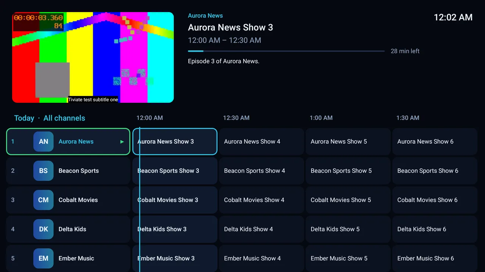
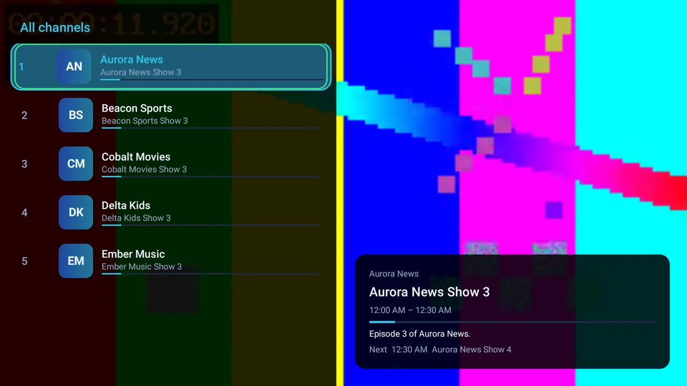
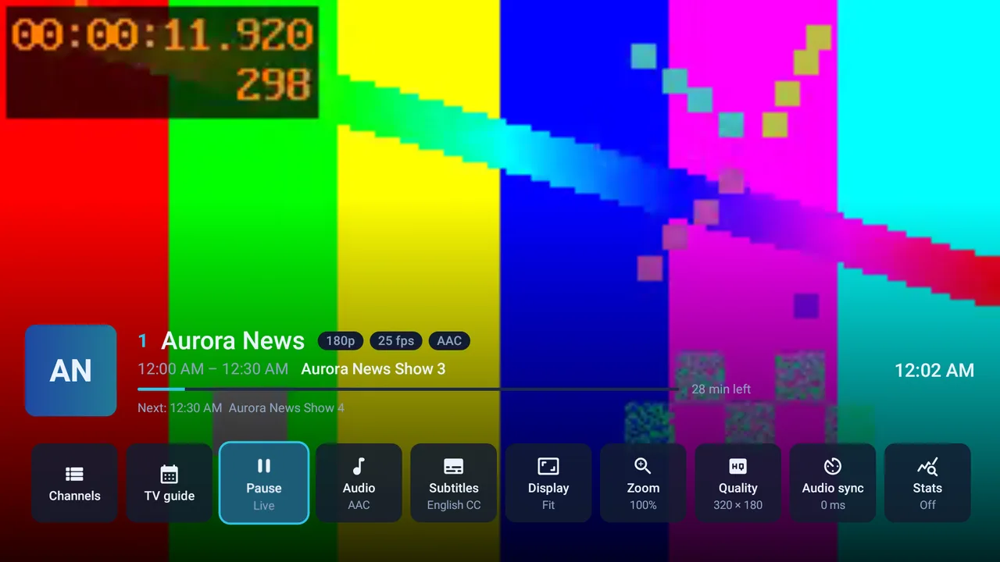

Free IPTV player for Android TV and Fire TV
Open source, built for the remote, and every feature is free. Add your own M3U link or Xtream Codes login and watch with a full TV guide.

Everything a live TV player needs, without a premium tier
Made for watching TV from the sofa with a remote, and smooth on a low-cost Fire TV Stick.
Full TV guide (EPG)
A guide grid with a live preview and minutes left. XMLTV guides are found from your playlist, and you can add your own (.gz and .xz work).
M3U and Xtream Codes
Add an M3U or M3U8 link, an Xtream Codes login or a local M3U file. Playlists update on start, daily, weekly or monthly.
Built for the remote
OK opens the player options, Left opens your groups, and holding Back always returns to the player.
Your channels, your way
Favourites, recent channels and your own groups. Hide, rename and reorder channels, or strip "UK:" and "| FHD" from names.
Reliable playback
Hardware decoding, AC3 and DTS sound on TVs that can't decode it, automatic reconnect, and a switch between .ts and .m3u8 when a channel fails.
Every feature free
Audio and subtitle tracks, audio sync, sleep timer, picture-in-picture, backup and restore. Nothing is locked.
Private
No account, no ads, no analytics. Your playlist logins stay on your TV.
Keeps itself up to date
Tiviate tells you when a new version is out and installs it for you. You can turn the check off.
Screenshots



A free, open-source alternative to TiviMate
If you like how TiviMate works on a TV but don't want to pay to unlock features, Tiviate covers the same everyday use: live TV with a guide, groups and favourites, all driven by the remote.
- Every feature is free, with no premium tier to unlock.
- The source code is public, so anyone can check what the app does.
- No account and no tracking.
- Backups move your playlists, favourites and settings to a new TV.
- Tiviate is an independent project and is not affiliated with TiviMate.
Install on a Fire TV Stick or Fire TV
On Android TV and Google TV, download the APK with a browser or a file-sending app and open it.
Get Downloader
Install the free Downloader app from the Amazon Appstore on your Fire TV.
Allow the install
Settings → My Fire TV → Developer options → Install unknown apps → turn on Downloader. No Developer options? Open My Fire TV → About and press the device name 7 times.
Download Tiviate
In Downloader, enter
github.com/Amitk2108/tiviate/releases/latest, choose the.apkfile and press Install.Add your playlist
Open Tiviate and add your M3U link, Xtream Codes login or M3U file. The guide fills in by itself.
Questions
Is Tiviate free?
Yes. Every feature is free. There is no premium version, no account, no ads and no tracking. The source code is open under the GPL-3.0 licence.
Does Tiviate include channels?
No. Tiviate is a player only. You add the M3U link, Xtream Codes login or M3U file you already have from your own provider.
Is Tiviate an alternative to TiviMate?
Yes. Tiviate is an independent, open-source IPTV player for the same kind of use: live TV with a TV guide on Android TV and Fire TV. All of its features are free. It is not affiliated with TiviMate.
How do I install Tiviate on a Fire TV Stick?
Install Downloader from the Amazon Appstore, allow it under Settings, My Fire TV, Developer options, Install unknown apps, then open github.com/Amitk2108/tiviate/releases/latest in Downloader and install the APK.
Which devices does Tiviate run on?
Android TV and Google TV devices and Amazon Fire TV and Firestick, on Android 7.0 or newer. It also runs on Android phones and tablets with touch.